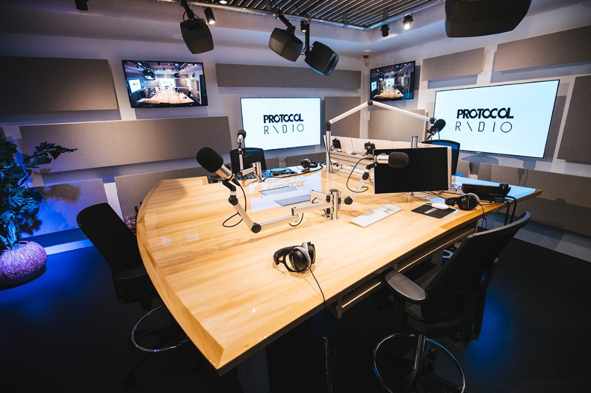

PODLER
Descubra novos mundos através dos livros!
Junte-se a nós em uma jornada literária! Aqui você encontrará resenhas, análises e conversas sobre os melhores livros do momento.

chamas de inverno
➡️
CLIQUE NO LINK DEPOIS NO PLAY
Capitães da Areia
➡️